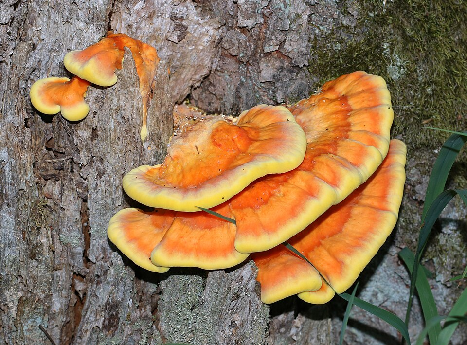
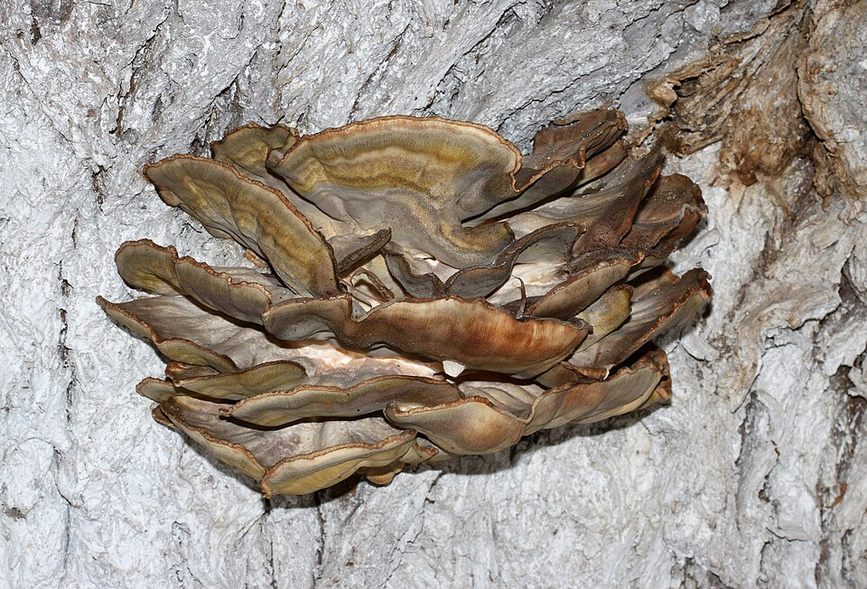
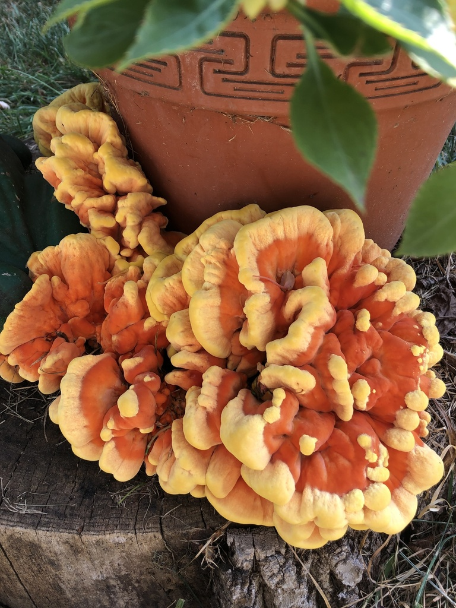
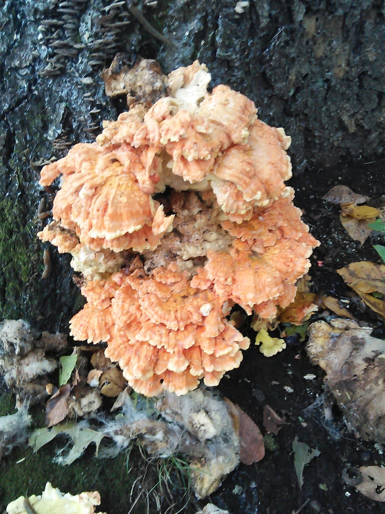

Żółciak siarkowy





Opis i występowanie
Żółciak siarkowy to jeden z najbardziej efektownych i niepowtarzalnych grzybów europejskich — jego jaskrawopomarańczowe i żółte kapelusze są widoczne z daleka. Rośnie jako wielowarstwowe grono nakładających się wachlarzy na pniach i konarach drzew liściastych: dęb, wiśnia, czereśnia, kasztan, wierzba, rzadziej iglaste. Pierwsze owocniki pojawiają się wiosną (maj–czerwiec), kolejne latem i jesienią.
Powierzchnia górna: intensywnie pomarańczowa do łososiowej, z jaśniejszym żółtym brzegiem. Dolna strona i pory: siarkowożółte, gęste — stąd nazwa. Miąższ biały, wodnisty, lekko kwaśny, w smaku przypomina kurczaka (ang. Chicken of the woods). Kolor jest absolutnie niepowtarzalny — nie istnieje żaden niebezpieczny sobowtór.
Związek z drzewem
Żółciak siarkowy jest jednocześnie pasożytem i saprofitem — potrafi zaatakować żywe drzewo lub rozwijać się na pniakowatym drewnie. Wywołuje brunatną zgniliznę twardzielową: rozkłada ligninę i celulozę w bieli i twardzieli drzewa, prowadząc do osłabienia, a niekiedy obumarcia drzewa.
| Drzewo-żywiciel | Częstość | Uwagi |
|---|---|---|
| Dąb (Quercus) | ⭐⭐⭐⭐⭐ bardzo często | Najczęstszy żywiciel w Polsce; szukaj na starych dębach parkowych i leśnych |
| Wiśnia / czereśnia (Prunus) | ⭐⭐⭐⭐ często | Sady, obrzeża lasów; owocniki szczególnie duże |
| Kasztan jadalny (Castanea) | ⭐⭐⭐ umiarkowanie | Tereny górskie i południowe; rzadszy na nizinach |
| Wierzba (Salix) | ⭐⭐⭐ umiarkowanie | Wzdłuż cieków wodnych, łęgi; często na głowiastych wierzbach |
| Akacja (robinia) (Robinia pseudoacacia) | ⭐⭐ rzadziej | ⚠ Okazy z robinii częściej wywołują reakcje żołądkowe — zbieraj ostrożnie |
| Cis (Taxus baccata) | ⭐ sporadycznie | ⚠ Okazy z cisa są silniej problematyczne — unikaj lub jedz z ostrożnością |
| Świerk, sosna (Picea, Pinus) | ⭐ rzadko | Na iglastych notuje się więcej reakcji alergicznych |
Cechy rozpoznawcze
- Kolor — żywa pomarańcz i żółć, widoczna z odległości kilkudziesięciu metrów.
- Brak blaszek — dolna strona to drobne pory (kremowożółte), nie blaszki.
- Rośnie na drewnie — zawsze na żywych lub martwych drzewach, nigdy na ziemi.
- Wachlarze nakładają się — tworzą schodkowe kolonie do kilku kilogramów.
- Miąższ biały i wilgotny — w przekroju biały, po wysuszeniu łupliwy.
Skład — wartości odżywcze
| Składnik | Wartość / efekt |
|---|---|
| Białko (ok. 14 g/100g s.m.) | Jedno z wyższych w świecie grzybów, tekstura podobna do mięsa |
| Beta-glukany | Stymulacja układu odpornościowego |
| Selen, cynk, potas | Antyoksydanty, praca mięśni |
| Ergotioneina | Unikatowy antyoksydant grzybowy |
| Niacyna (B3) | Metabolizm energetyczny |
| Kalorie: ok. 33 kcal/100g | Niskokaloryczny, sycący — dobry substytut mięsa |
Właściwości zdrowotne
Żółciak nie jest tradycyjnym grzybem leczniczym, ale zawiera kilka związków bioaktywnych z udokumentowanym działaniem:
- Beta-glukany — polisacharydy stymulujące aktywność makrofagów i komórek NK układu odpornościowego; podobne działanie jak beta-glukany owsa i grzybów azjatyckich.
- Ergotioneina — unikatowy antyoksydant syntetyzowany wyłącznie przez grzyby i niektóre bakterie; gromadzi się w narządach narażonych na stres oksydacyjny (soczewka, mitochondria, wątroba). Żółciak jest jednym z bogatszych źródeł.
- Białko (~14 g/100 g s.m.) — kompletny profil aminokwasowy, wyjątkowo wysoki jak na grzyba; doskonałe białko roślinne w diecie wegańskiej.
- Selen i cynk — mikroelementy wspomagające odporność i gospodarkę antyoksydacyjną.
- Aktywność przeciwdrobnoustrojowa — ekstrakty etanolowe wykazywały in vitro hamowanie wzrostu S. aureus i niektórych grzybów patogennych; badania wciąż wstępne.
Zastosowania kulinarne
Żółciak sprawdza się tylko jako młody, miękki okaz. Starsze egzemplarze (twarde, blade, kruchliwe) nadają się wyłącznie do suszenia i mielenia na proszek umami.
- Smażenie w plastrach — jak filet z kurczaka, na maśle lub z panierce.
- Grillowanie — duże plastry na ruszcie, świetnie chłonie marynaty.
- Curry i gulasz — tekstura utrzymuje się przy duszeniu.
- Panierowanie — obtoczony w panierce jabłkowej lub panko.
- Suszenie — starsze owocniki wysusz i zmiel na proszek umami do zup.
Przepisy
🍗 Żółciak smażony jak kurczak
- Żółciak pokrój w plastry 1–1,5 cm, jak filety. Sprawdź miękkość — powinien poddawać się palcowi.
- Marynatę: sos sojowy + cytryna + czosnek + papryka wędzona, 10 min.
- Na rozgrzanym maśle klarowanym smaż 5 min z każdej strony do złotobrązowego koloru.
- Sól, pieprz, świeży tymianek. Podawaj z sałatką i pieczywem.
🍱 Żółciak w panierce (vege-kotlet)
- Żółciak pokrój w plastry 1 cm. Obtocz w mące, jajku i bułce tartej (lub panko).
- Smaż na rozgrzanym oleju 4 min z każdej strony na złoto.
- Odsącz na papierze. Podawaj z surówką z kapusty i cytryną.
- Opcjonalnie: przed panierką zalej marynatą — sos sojowy + czosnek + kminek.
🍛 Curry z żółciaka
- Żółciak pokrój w kostkę 3 cm. Cebulę i czosnek podsmaż na oleju.
- Dodaj grzyby, smaż 5 min. Dodaj łyżkę pasty curry, kurkumę, imbir.
- Wlej 400 ml mleka kokosowego. Gotuj 15 min.
- Dopraw solą, sokiem z limonki, kolendrą. Podawaj z ryżem basmati.
🍵 Zupa kremowa z żółciaka
- Cebulę i czosnek zeszklij. Dodaj żółciaka w kawałkach, smaż 8 min.
- Wlej 900 ml bulionu warzywnego. Gotuj 20 min do miękkości.
- Zmiksuj na krem. Dodaj 100 ml śmietanki.
- Dopraw solą, pieprzem, tymiankiem. Udekoruj chrupiącymi kawałkami żółciaka.
✓ Zalety
- Absolutnie niepowtarzalny kolor — brak możliwości pomylenia
- Mięsista tekstura — świetny substytut kurczaka
- Duże owocniki — jeden okaz wystarczy na kilka dań
- Łatwy do znalezienia — widać z odległości
- Bogaty w białko i beta-glukany
✗ Wady i uwagi
- Tylko młode okazy są jadalne — stare są twarde i niestrawne
- Ok. 5–10% osób ma nadwrażliwość — zacznij od małej porcji
- Okazy z iglaków (zwłaszcza cisa, robinii) częściej powodują reakcje
- Krótki okres przydatności — przerabiaj w dniu zbioru
- Stare owocniki cuchnące i gorzkie — nie zbieraj
Ciekawostki
- Żółciak siarkowy jest pasożytem i saprofitem — żeruje na żywych drzewach, powodując brunatną zgniliznę twardzielową. Potrafi zabić dąb.
- W Anglii i USA żółciak nosi nazwę "Chicken of the Woods" — dosłownie „las kurczak", ze względu na smak i teksturę miąższu.
- Jeden owocnik może ważyć nawet kilkanaście kilogramów — rekordowe okazy to ponad 20 kg.
- Po wysuszeniu i zmieleniu daje intensywny proszek umami — doskonały do zup i sosów zamiast kostki bulionowej.
- Wykazano wstępne właściwości przeciwbakteryjne i przeciwgrzybicze ekstraktów z żółciaka.